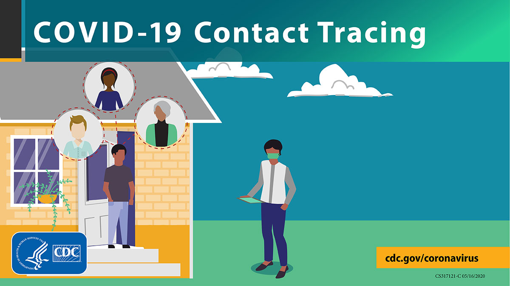

Enrichment
About Me
Projects
Leadership
Research
Education
Enrichment
LinkedIn
GitHub
Robotix Institute
AI Ambassadors Program
VEX Robotics EDR
Python (python programmer career course on datacamp) (2021)
Machine Learning with Scikit (course on datacamp) (2021)
The Global Health Leaders Conference at Johns Hopkins University (2021)
COVID-19 Contact Tracing Course by Johns Hopkins University (2020)

© Varun Bussa
Design:
HTML5 UP